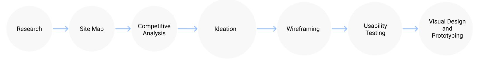
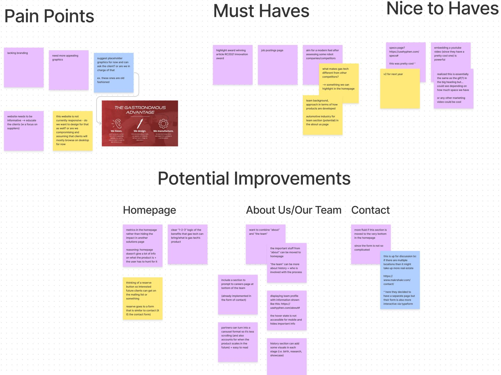
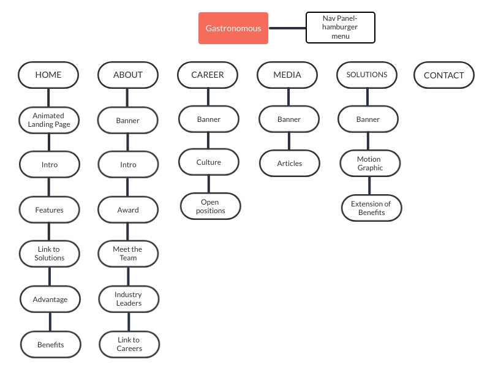
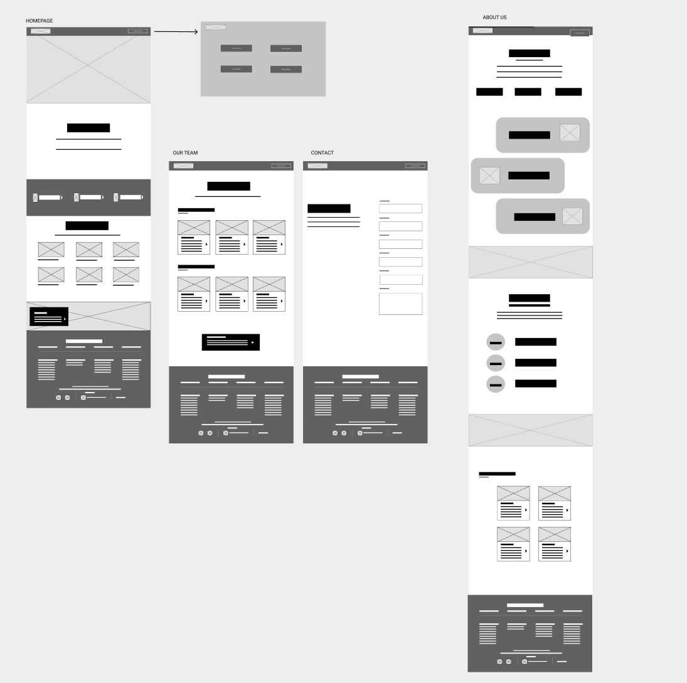
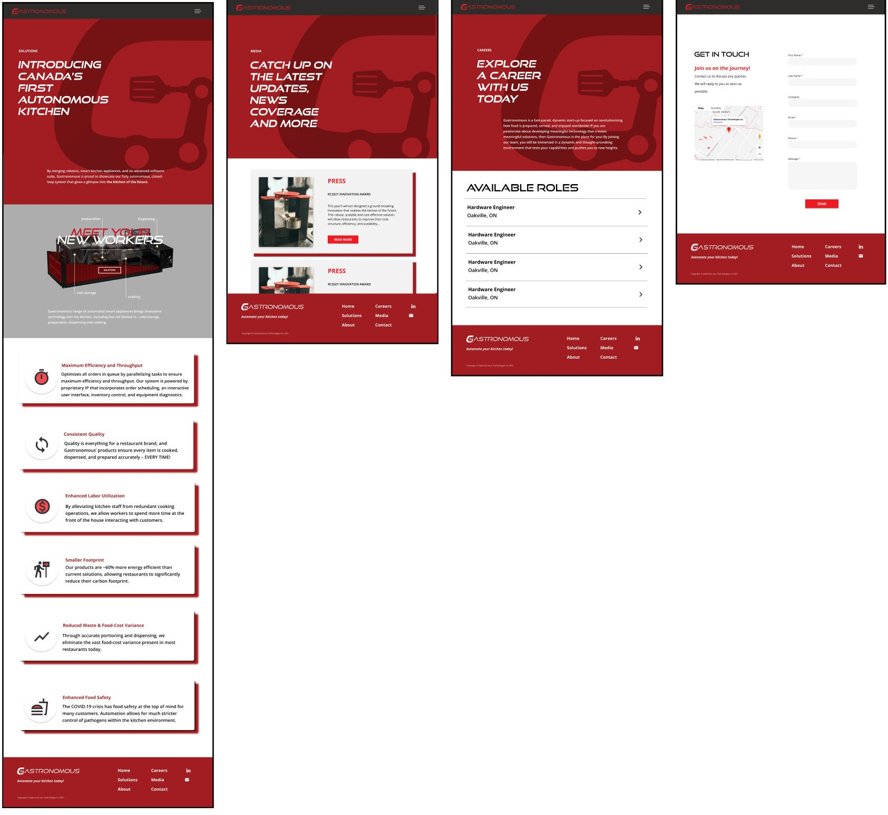
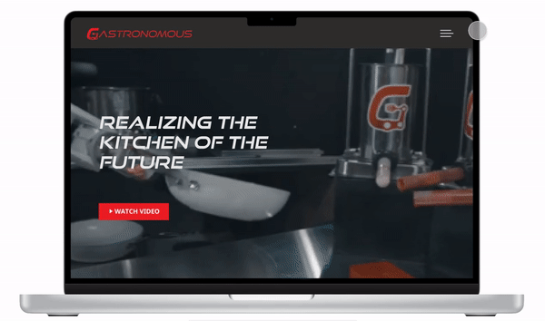

Design Question:
How might we improve elements like structure, content and visuals of previous website to better serve customers?
Our (Re)Design Process
1. Research
Being a new member of the Gastronomous team, I had no previous experience with the company and it's website. Thus, we started our research process by identifying the pain points in the current website, and the areas where improvement could be made.

Based on our research of the current website, we narrowed down the following major pain points:
- Website lacks information and does a poor job of educating the user
- Old-fashioned design - a major contrast to the modern product the company is trying to sell!
- Lack of aesthetic apeal
- Cluttered information and graphics
- No careers page or media page - information on careers and articles scattered across other pages
Thus, we came to the conclusion that users require a website that is more informative and tells a story about the product. In order for the user to be interested and intrigued by the content, the website also needs better visuals and a more clean look.
2. Ideation
The brainstorming process involved studying a variety of websites for inspiration, including competitor websites, identifying the positive and negative attributes of each. We then crafted ideas about how to incorporate the positive attributes (good graphics, simple and concise content, etc.). After all those rounds of discussion, our proposed IA looked like this in the diagram below.

We made the following improvements to the IA:
- Every page included relevent redirections to pages that could provide the user with information that could be read in a flow. Redirectons would result in an increased conversion rate
- Old-fashioned design - a major contrast to the modern product the company is trying to sell!
- Hamburger menu to allow user to easily navigate to the page that they are looking for.
- Customized banner for each page.
- Homepage incorporated scrollable storytelling aspect to allow user to gain insight into the brand's identity.
3. Sketches
We started by sketching what we imagined each page to potentionally look like. According to our IA chart, we also organized what content would be displayed on the pages, and played around with the layouts. Through these low-fidelity wireframes we were able to decide the composition we wanted for the webpages. This aided in deciding the flow and user journey.
4. Wireframes and Design
Home Page

The HomePage answers the following questions — What we are, who we are, what we do, how we can help you. The user can gain all this information in just one page, but it also compels visitors to dig deeper into the website and move down the funnel to learn more. Some key highlights are:
- Tried to have more impact with fewer words — Crisp visuals
- Easy scanning
- Clear, easy-to-find value proposition
- Consistent design for graphics and pictures
- Reinforced branding by using company colors
With the homepage, we aimed for the user to gain a basic understanding of what the company stands for, and what it does. So we adopted a storytelling design that includes animations, lots of images or graphics, and big text or titles to grab the reader's attention. Readers have the option of navigating to solutions page to learn about the product in depth. However, a user that just wishes to briefly scan the website can do so and still learn a lot about the company at one go.
About Us

The About Us page dives deeper into the answer to the question touched upon in the homepage - Who are we? Through the About Us page, we tried to develop some trust between the visitor and the company. They get to peek behind the curtain and see if the company is one they’d like to do business with or even work for. Some key highlights are:
- Straightforward presentation of the facts and figures
- Inspire trust by providing useful information
- Sleek 'meet the team' section, with pop-up modal for each team member for more information
- Tried to give visitors 'a peek behind the curtain' by using pictures of company in action
- Link to innovation award article (tooting their own horn a little!) and careers page
Solutions | Media | Careers | Contact

Taking the company's branding into account, we tried to have the components which were the foundational atoms of the rebranding for all the web pages. We also created a specs animation for the solutions page to give users a 3-D view of the product and it's functions.

Key Highlights:
- Each page has it's purpose highlighted so the goal of the page is fulfilled with ease
- Animated specs graphic of automated kitchen pointing out functionality of each automated product
- Continued consistent design for graphics and pictures
- Gives users what they want by keeping these pages simple and clean
Navigation Menu

We decided to implement a hamburger menu, and a full screen navigation menu because they allow for experimentation without jeopardizing a website’s functionality or confusing the user. And since they are accessed through a single icon, there’s a lot of room for other page elements.
- Reflects website and contains necessary pages.
- Consistent menu for all pages.
- Red highlight and italic font when a page title is hovered over.
What I've Learnt
I learned how to truly collaborate in a fast-paced environment, working with another designer, to project managers and devs - it really takes a village to build a successful product. I also learnt how to analyze what's working and what isnt by using analytics to see what visitors find valuable, and what they don’t. This project also taught me how to be flexible with accomodating client requests and conducting meetings.
What's Next?
I'd love to work on more design projects with IDC and maybe even take on more redesign assignments! As for Gastronomous Tech, I wish them the best and hope to work with them again in the future on the design of the mobile version of their site.